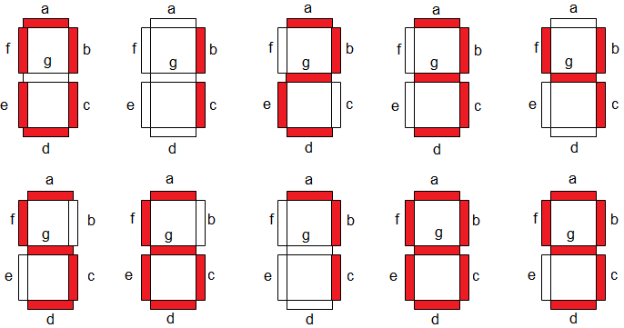
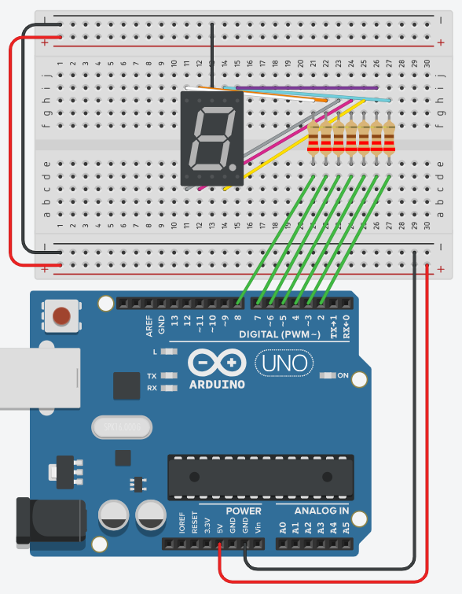

Je maakt een teller die doorlopend van 0 tot en met 9 telt op één 7-segment display. Dat doe je in drie stappen: eerst sluit je één segment aan en controleer je je bedrading, dan teken je er een acht mee, en daarna maak je er cijfers van.
Een 7-segment display is zeven leds in de vorm van een acht. Elk van die leds heet een segment en draagt een letter, a tot en met g. Welke segmenten branden, bepaalt welk cijfer je ziet.

Deze oefening gaat uit van een common cathode display: de gemeenschappelijke pin van alle zeven segmenten hangt aan de GND, en een segment brandt wanneer de Arduino-pin HIGH is. Het verschil met een common anode display staat op Het 7-segment display.
Sluit eerst alleen segment a aan, met zijn eigen voorschakelweerstand, en verbind de gemeenschappelijke pin van het display met de GND. Schrijf een korte sketch die die ene pin HIGH zet. Het segment hoort te branden. Zo weet je welke Arduino-pin effectief aan segment a hangt voor je er zes bijsteekt.
Sluit nu de overige zes segmenten aan, elk met zijn eigen weerstand. Noteer erbij welke Arduino-pin bij welk segment hoort, want dat heb je zo nodig.
Zeven keer pinMode uitschrijven mag, maar het kan korter. Zet de zeven pinnummers in een array en loop er met een for-lus overheen. Je hebt die array straks toch nodig.
Een 8-animatie laat de segmenten na elkaar oplichten alsof je met een pen een acht tekent, zonder je hand op te heffen: a, b, g, e, d, c, g, f en dan weer van voor af aan. Er brandt telkens maar één segment tegelijk, en elk segment blijft 1 seconde aan.
De acht bestaat uit twee lussen, een bovenste en een onderste, die elkaar in het midden kruisen. Dat kruispunt is segment g, en daar kom je dus twee keer voorbij: één keer op weg naar beneden en één keer op weg naar boven.
De periode T is de duur van één volledige animatiecyclus die steeds wordt herhaald. De animatie bestaat uit 8 stappen van 1 seconde (a, b, g, e, d, c, g, f), dus de periode is 8 × 1 s = 8 s.
De relatie tussen frequentie en periode is f = 1 / T.
De frequentie van de animatiecyclus is hier dus 1 / 8 s = 0,125 Hz.
De pinnummers hieronder zijn die van het schema: de segmenten a tot en met g op de pinnen 2 tot en met 8. Zit jouw display anders aangesloten, pas dan de zeven constanten bovenaan aan.
Op het schema hieronder gaat de gemeenschappelijke pin van het display naar de GND-rail. Elk segment hangt via zijn eigen voorschakelweerstand aan een pin tussen 2 en 8.

De constanten segA tot en met segG geven elke pin een naam, en segmentPins zet ze op een rij zodat je ze met een for-lus als uitgang kan instellen. De array animatie bevat de 8 stappen van de beweging, met segG twee keer.
const int segA = 2;
const int segB = 3;
const int segC = 4;
const int segD = 5;
const int segE = 6;
const int segF = 7;
const int segG = 8;
const int segmentPins[7] = {segA, segB, segC, segD, segE, segF, segG};
// De acht in één beweging: a, b, g, e, d, c, g, f
const int animatie[8] = {segA, segB, segG, segE, segD, segC, segG, segF};
void setup()
{
for (int i = 0; i < 7; i++)
{
pinMode(segmentPins[i], OUTPUT);
digitalWrite(segmentPins[i], LOW); // common cathode: LOW is uit
}
}
void loop()
{
for (int i = 0; i < 8; i++)
{
digitalWrite(animatie[i], HIGH);
delay(1000);
digitalWrite(animatie[i], LOW);
}
}De schakeling blijft dezelfde: hetzelfde display, dezelfde zeven segmentpinnen. Wat er nu bijkomt, is dat een segment niet meer los oplicht, maar als deel van een cijfer.
Daarvoor heb je een tabel nodig: per cijfer welke van de zeven segmenten aan moeten. Je maakt één rij per cijfer en één kolom per segment, en de rij die je uitleest bepaalt welk cijfer op het display verschijnt. Hoe je zo'n tweedimensionale array opbouwt en uitleest, staat op Arrays. Welke segmenten bij welk cijfer horen, staat op Het 7-segment display.
Laat je display doorlopend tellen van 0 tot en met 9. Elk cijfer blijft 1 seconde staan.
De periode T is de duur van één volledige tellercyclus die steeds wordt herhaald. De teller bestaat uit 10 cijfers (0 tot en met 9) die elk 1 seconde op het scherm staan, dus de periode is 10 × 1 s = 10 s.
De relatie tussen frequentie en periode is f = 1 / T.
De frequentie van de tellercyclus is hier dus 1 / 10 s = 0,1 Hz.
Sla je oefening op.
Overloop volgende checklist om je oefening zelf te evalueren:
Eén segment
De 8-animatie
De teller
De constanten en de setup() blijven wat ze bij de 8-animatie waren. Er komt een tabel bij met één rij per cijfer en één kolom per segment, waarin een 1 betekent dat dat segment moet branden.
toonCijfer() leest één rij uit die tabel en zet ze op de zeven pinnen. De ?: is de korte schrijfwijze van een if/else die tussen twee waarden kiest, zie Een tweevoudige selectie in het kort. Een 1 in de tabel wordt zo HIGH, en op een common cathode display brandt dat segment.
const int segA = 2;
const int segB = 3;
const int segC = 4;
const int segD = 5;
const int segE = 6;
const int segF = 7;
const int segG = 8;
const int segmentPins[7] = {segA, segB, segC, segD, segE, segF, segG};
// Eén rij per cijfer, één kolom per segment: a,b,c,d,e,f,g. 1 = segment aan.
const bool cijferPatronen[10][7] = {
{1, 1, 1, 1, 1, 1, 0}, // 0
{0, 1, 1, 0, 0, 0, 0}, // 1
{1, 1, 0, 1, 1, 0, 1}, // 2
{1, 1, 1, 1, 0, 0, 1}, // 3
{0, 1, 1, 0, 0, 1, 1}, // 4
{1, 0, 1, 1, 0, 1, 1}, // 5
{1, 0, 1, 1, 1, 1, 1}, // 6
{1, 1, 1, 0, 0, 0, 0}, // 7
{1, 1, 1, 1, 1, 1, 1}, // 8
{1, 1, 1, 1, 0, 1, 1} // 9
};
void setup()
{
for (int i = 0; i < 7; i++)
{
pinMode(segmentPins[i], OUTPUT);
}
}
void toonCijfer(int cijfer)
{
for (int i = 0; i < 7; i++)
{
bool segmentAan = cijferPatronen[cijfer][i];
digitalWrite(segmentPins[i], segmentAan ? HIGH : LOW);
}
}
void loop()
{
for (int cijfer = 0; cijfer <= 9; cijfer++)
{
toonCijfer(cijfer);
delay(1000); // 1 seconde per cijfer, dus T = 10 s en f = 0,1 Hz
}
}Deze toonCijfer() gebruik je in de volgende oefening opnieuw, dan met twee displays naast elkaar.